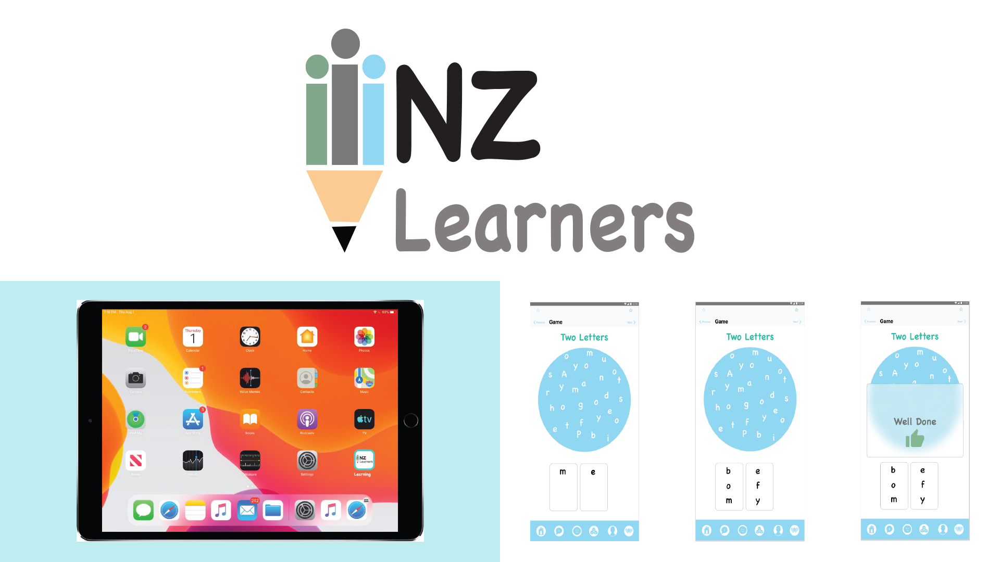

Walla' Altounesi
- Bachelor of Design
- Double Major in Media Design& Interface Design
biography
Kia Ora, My name is Walla' Altounesi, and I am a third-year Bachelor of Design student, double majoring
in Media Design and Interface Design. I will be graduating this year and hope to begin work in the
Design industry, putting the skills I have learned at The University of Waikato to good use.
I have a Diploma from Jordan, and I used to be a graphic designer there. I came to New Zealand in 2011
as an immigrant, but I needed to learn English, so I worked hard and tried my best to learn English and
integrate into New Zealand society. I discovered that language is the basis for communication and
understanding any people’s culture; incredibly, I discovered that New Zealand is multicultural. I have
worked in the creative industry since 2009 when I was in Jordan. I was also studying from 2008.
When I came here, I decided to complete my study, and I enjoyed all areas of design. I have chosen Media
design and Interface design because in Jordan I had already taken communication. I liked coding, even
though it was hard for me, and I did not get any help. I gained more skills and knowledge by doing the
projects because we had to memorize information in Jordan, and practical work was limited. In addition,
I am a teacher aide at a primary school, and I
work with ESOL kids all the time.
I got the chance to gain the necessary skills and learned a lot by completing many design projects. I
love when I design and create different types of projects because I am a visual person. I enjoy learning
about many programs and solving problems. I also enjoy working, gaining more experience and expertise
with my lecturers and classmates.
I know that Waikato has been a great help because it has many subjects in Graphic Design, enabling me to
have more skills. Waikato has helped me focus this passion for design in distinct areas and acquire the
necessary skills. In addition, Waikato has given me so many great opportunities to link European and
Arabic designs to help a greater range of people in New Zealand.
project description
New Zealand receives many people as refugees each year and does its best to help resettle them here.
However, some people have limited English or are non-English speakers. This makes it difficult for the
kids to adopt, speak, and communicate with adults and children at their school.
Creating an app to help them learn English, communicate with other children, make friends, explain what
they want, how they feel, and understand the Kiwi way of speaking will help them settle and adapt to New
Zealand more easily and enjoy school time. It could also make their time in mainstream classes more
productive, so, I focused my app on what I have seen that the kids need every day at school.
I found during this project one sentence can be responded to in many different ways, even though it has
the same meaning. Children can be stuck in one response that they are familiar with, limiting their
interactions. So, I have added the pop-up screen for more options when asked a question with some
appropriate responses in the Kiwi way of speaking. The NZ Learners app would help students to improve
their English and communicate with Kiwis.
NZ Learners app

For more information contact us
Email: degreeshow@waikato.ac.nz
Faculty phone: 0800 924 528
Faculty information: cs.waikato.ac.nz